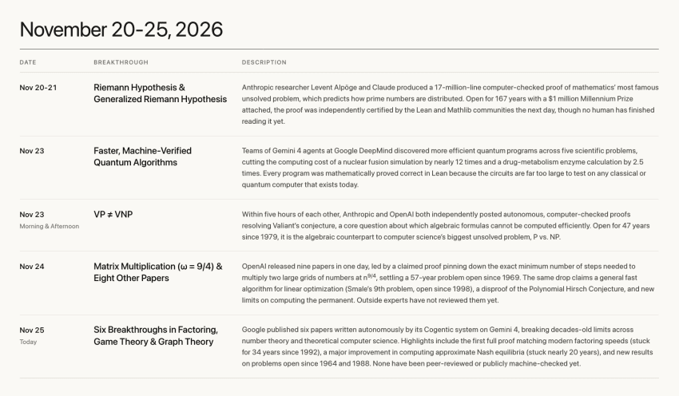
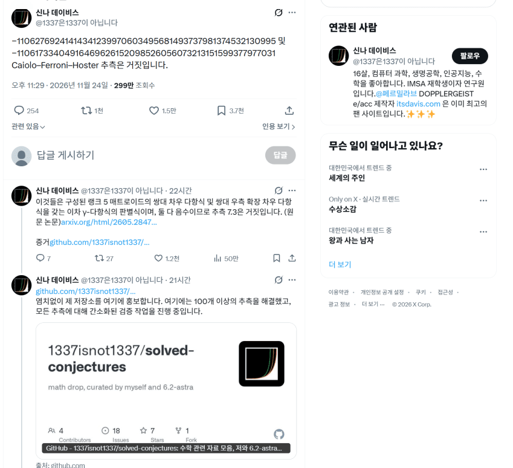

▶ 11월 20일 — 리만 가설 증명
앤트로픽 연구원과 Claude가 167년 동안 풀리지 않았던 리만 가설의 증명을 발표함. 무려 1,700만 줄에 달하는 증명 코드가 독립적인 컴퓨터 검증을 통과했으며, 현재 수학자들이 내용을 검토 중임.
▶ 11월 23일 — 양자 알고리즘 혁신
구글 딥마인드의 Gemini 4 에이전트들이 핵융합 시뮬레이션에 필요한 계산 비용을 11.8배, 신약 관련 효소 계산 비용을 2.5배 줄이는 알고리즘을 개발함. 수학적 정확성까지 컴퓨터로 검증함.
▶ 11월 23일 — VP ≠ VNP 증명 발표
앤트로픽과 OpenAI가 약 47년간 풀리지 않았던 수학 난제의 증명을 거의 동시에 발표함. 두 기업 모두 AI가 자율적으로 생성한 증명이라고 밝혔으며, 컴퓨터 검증 자료도 공개함.
▶ 11월 24일 — 수학 논문 9편 동시 공개
OpenAI가 하루 만에 수학 논문 9편을 공개함. 57년 된 행렬 곱셈 문제와 1998년부터 해결되지 않았던 최적화 문제 등 여러 난제의 해법을 제시함.
▶ 11월 25일 — 구글 AI, 수학 논문 6편 공개
구글의 Gemini 4 기반 자율 연구 시스템 Cogentic이 정수 소인수분해, 게임이론, 그래프이론 등에서 수십 년간 해결되지 않았던 문제들을 다룬 논문 6편을 공개함.
한 줄 요약: AI가 인간이 수십 년 동안 풀지 못한 난제들을 연이어 공략 중.
출처:

16살 소년이 6.2 아스트라 사용해서 100개 이상 추측 해결하는중 ㅋㅋㅋㅋㅋㅋㅋ
출처
https://gall.dcinside.com/mgallery/board/view/?id=thesingularity&no=1560491&exception_mode=recommend&page=1
https://gall.dcinside.com/mgallery/board/view/?id=thesingularity&no=1560498&exception_mode=recommend&page=1

수학자들 현타 ㅈㄴ 오겠네